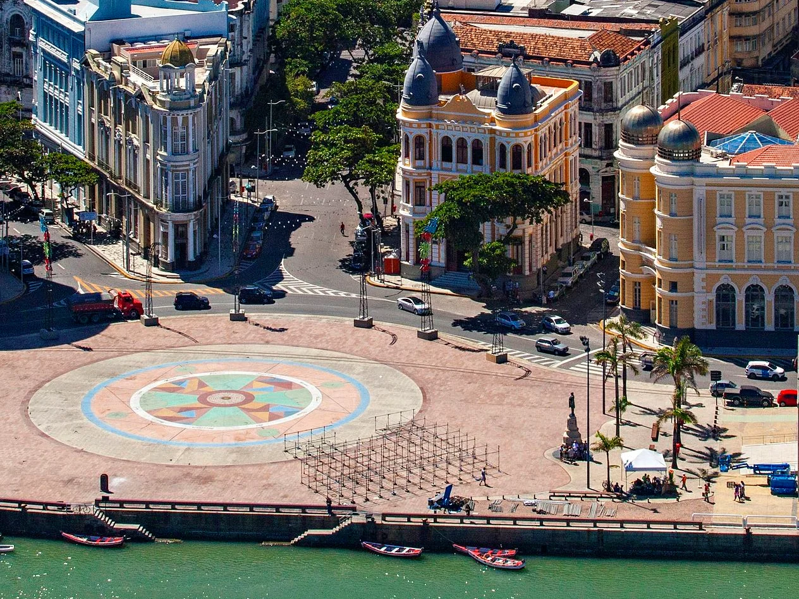

A força dos cartórios.
A serviço de Pernambuco.
Informação para a sociedade, representação para a categoria e formação para quem trabalha nos cartórios de Pernambuco.
- 14
- comissões temáticas
- 12
- diretorias regionais
- 184
- municípios, do litoral ao sertão

Em pauta
O que você precisa resolver hoje?
Entenda os serviços e encontre o caminho até os canais oficiais. Informação clara para exercer seus direitos.
Mais perto das pessoas. Mais simples para você.
Representação. Presença. Participação.
A ANOREG/PE representa a atividade notarial e registral pernambucana, aproximando os cartórios, as instituições e a sociedade.
Acompanhe as pautas da categoria, as ações da entidade e as oportunidades de formação profissional.
Quem faz. O que acontece.
Conheça quem integra as comissões temáticas e as diretorias regionais e acompanhe seus projetos.
Conhecimento aplicado à sua rotina.
Cursos, encontros e materiais de apoio para titulares e equipes.
Catálogo de apresentação. Cursos, docentes e agenda sujeitos à definição pela ANOREG/PE.
Referências para consultar.
Acesso direto a órgãos e centrais oficiais para consultar normas, serviços e informações.
Corregedoria Geral da Justiça
Normas, comunicados e informações do TJPE.
Consultar fonte oficial 02 · BrasilConselho Nacional de Justiça
Atos e orientações nacionais da atividade extrajudicial.
Consultar fonte oficial 03 · ANOREG/PEAcervo institucional e emolumentos
Consulte as publicações no portal atual da entidade.
Acessar o portal atualSua serventia, mais forte em rede.
Conheça a associação e os benefícios para a categoria.